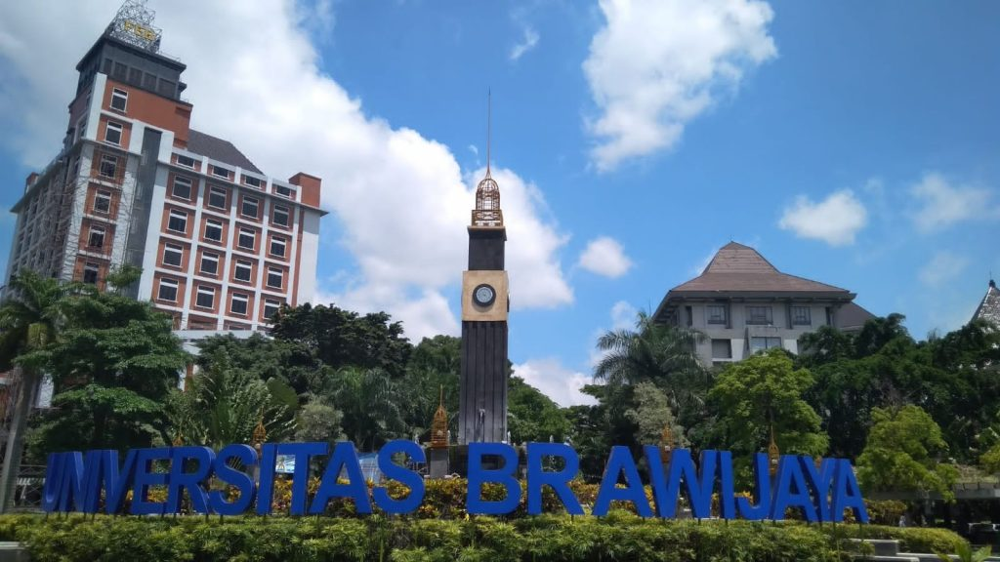

Pendidikan
Saya adalah mahasiswa semester 6 Teknologi Informasi di Universitas Brawijaya. Saya fokus pada pengembangan Front-End, dengan keterampilan utama di HTML, CSS, dan JavaScript untuk membangun antarmuka pengguna yang interaktif.
"Front-End Development berfokus pada tampilan dan interaksi pengguna menggunakan HTML, CSS, dan JavaScript."
Saya adalah mahasiswa semester 6 Teknologi Informasi di Universitas Brawijaya. Saya fokus pada pengembangan Front-End, dengan keterampilan utama di HTML, CSS, dan JavaScript untuk membangun antarmuka pengguna yang interaktif.

Saya memiliki keahlian dalam pengembangan web menggunakan HTML, CSS, dan JavaScript. Saya juga terbiasa menggunakan framework seperti React.js dan Tailwind CSS untuk menciptakan antarmuka yang responsif dan optimal.

Saya bercita-cita menjadi Full-Stack Developer dengan fokus utama pada Front-End. Saya senang mengeksplorasi teknologi terbaru seperti React, Vue, dan Tailwind CSS untuk menciptakan pengalaman pengguna yang lebih baik.
Dengan mengandalkan teknologi Tailwind CSS, saya menciptakan aplikasi yang tidak hanya modern, efisien, dan responsif, tetapi juga memiliki desain yang bersih dan adaptif. Pendekatan ini memungkinkan saya menghasilkan antarmuka yang intuitif, memberikan pengalaman pengguna yang optimal dan menyenangkan.